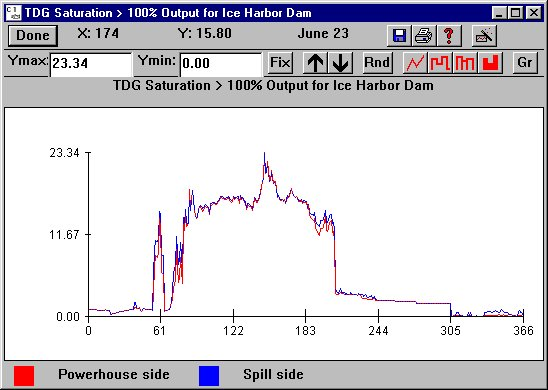

TDG Saturation > 100%: Dam
Selecting a Dam from Reservoir TDG Saturation > 100%Dam opens a histogram of the total dissolved gas (tdg) level exiting the dam for viewing only. This corresponds to the tailrace dissolved gas level. Tdg saturation for both the powerhouse flow (red) and spill flow (blue) levels are marked on the same graph. These flows often have different levels of gas upon exiting a dam because of the gas production from spill. Consult the table below to determine whether the spill side is left or right, looking downstream, at a specific dam. Histograms of the daily tdg level are displayed in percent above 100, the equilibrium level. For example, if saturations vary between 100% and 110%, the Y-axis will range from 0 to 10.
TDG Saturation > 100%Dam opens a histogram of the total dissolved gas (tdg) level exiting the dam for viewing only. This corresponds to the tailrace dissolved gas level. Tdg saturation for both the powerhouse flow (red) and spill flow (blue) levels are marked on the same graph. These flows often have different levels of gas upon exiting a dam because of the gas production from spill. Consult the table below to determine whether the spill side is left or right, looking downstream, at a specific dam. Histograms of the daily tdg level are displayed in percent above 100, the equilibrium level. For example, if saturations vary between 100% and 110%, the Y-axis will range from 0 to 10.
DAM spill side
Chief Joseph right
Wells left
Rocky Reach left
Rock Island right
Wanapum right
Priest Rapids right
McNary right
John Day right
The Dalles right
Bonneville right
Dworshak left
Hells Canyon right
Lower Granite right
Little Goose right
Lower Monumental left
Ice Harbor right
This is a Julian Day Output window.

TDG Saturation > 100% for Ice Harbor Dam